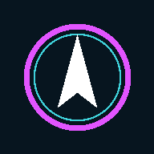

Navigazione costiera e lagunare
La rotta si calcola da sola: in laguna e nei fiumi segue solo i canali e le briccole presenti nei dati OpenStreetMap/OpenSeaMap, in mare si tiene lontana dalla costa. Per scegliere il passaggio (es. via mare o via canali) aggiungi una tappa lungo il percorso voluto.
Fuori rotta: D = sei a dritta della rotta, S = a sinistra. VMG = velocità utile verso il punto.
Le secche segnate qui generano un allarme se la prua le raggiunge entro 5 minuti o se la rotta ci passa vicino. Tieni premuto sulla carta per un menu rapido.
Condizioni d'uso e privacy · Rivedi il riepilogo
Con l'accesso Google e la condivisione accesa, il nome che scegli, il tipo di mezzo, la posizione, la rotta e la velocità sono visibili a tutti gli utenti dell'app che hanno fatto l'accesso. Vale solo mentre l'app è aperta: quando la chiudi o perdi la rete sparisci dalla carta entro pochi minuti. Puoi spegnere la condivisione o uscire quando vuoi. Le barche degli altri possono avere fino a un minuto di ritardo: non serve a evitare collisioni, guarda sempre fuori.
La rotta resta entro il limite più stretto tra patente e mezzo (distanza vera dalla costa, isole comprese, dai dati EMODnet) e in laguna e nei fiumi segue canali e briccole. Codice della nautica, art. 27 e 39: senza patente entro 6 miglia e motore fino a 40,8 CV (30 kW); natanti fino a 10 m entro 12 miglia con marcatura CE, entro 6 senza; moto d'acqua, canoe, kayak, pedalò e tavole entro 1 miglio. La categoria di progettazione CE (vento e onda) va rispettata a parte. Valgono anche le ordinanze delle Capitanerie (fascia di 300 m dalle spiagge in estate, aree marine protette, zone vietate): verificale sempre prima di partire.
Pescaggio e margine servono a evitare i fondali troppo bassi nel calcolo della rotta (profondità EMODnet, indicative).
Tocca un punto sulla carta per aggiungere note, cambiarne il tipo o eliminarlo. Puoi anche tenere premuto sulla carta e scegliere "Salva come mio punto".
Marine, distributori per barche e scivoli vengono da OpenStreetMap, con i servizi che i volontari hanno segnato (carburante, acqua, corrente, bagni, docce, gru...): possono mancare o essere cambiati, conviene chiamare prima. Compaiono sulla carta da vicino. Tocca "★ Recensioni" per leggere o scrivere le recensioni degli altri utenti.
Zone di pesca conosciute (tegnùe, trezze, barriere artificiali), ognuna con le regole e la fonte da cui vengono: per ora coprono l'Alto Adriatico e l'elenco crescerà. Sotto ci sono i relitti vicini, che spesso sono ottimi posti di pesca. Divieti e limiti cambiano: fanno fede le ordinanze della Capitaneria di porto e le norme in vigore.
Zone di ancoraggio segnate sulle carte nautiche, da OpenStreetMap/OpenSeaMap: possono mancare o essere incomplete. Quelle grigie sono riservate alle navi. Prima di dare fondo controlla fondale, tenuta, vento previsto, divieti e ordinanze locali.
In zona A di norma non si può entrare né ancorare; in B e C la navigazione e l'ancoraggio hanno limiti di velocità e di luogo. Ogni area ha il suo regolamento, che fa fede: i confini mostrati vengono da OpenStreetMap e possono essere incompleti. Se la rotta attraversa una zona A, la scheda Rotta te lo segnala.
Relitti da OpenStreetMap/OpenSeaMap: posizione e profondità sono indicative, verificale con un diving o con le carte ufficiali. Immergiti solo con il brevetto adatto alla profondità, segnala l'immersione con boa o bandiera sub e rispetta divieti, aree marine protette e relitti tutelati.
Previsioni dei modelli meteo di Open-Meteo, indicative. Prima di uscire controlla anche il bollettino del mare ufficiale e ricorda che vicino alla costa vento e onda possono essere diversi. Per vedere il meteo di un punto qualsiasi tieni premuto sulla carta e scegli "Coordinate e meteo qui".
Per Google Maps serve una chiave API: su console.cloud.google.com crea un progetto, attiva la "Map Tiles API" e crea una chiave. La chiave resta solo su questo telefono. Google offre un credito mensile gratuito; oltre si paga.
Le linee uniscono i punti con la stessa profondità e sono calcolate sul telefono dai dati EMODnet (maglia di circa 115 m), quindi funzionano anche senza rete se hai scaricato il pacchetto dati. Avvicinando la carta compaiono le linee più basse (2 e 5 m). Sono indicative: vicino a riva, in laguna e sui banchi che si spostano la profondità vera può essere diversa. Non sostituiscono le carte nautiche ufficiali.
Il traffico navale viene dalla mappa gratuita di VesselFinder e richiede internet. Mostra solo le navi con trasponditore AIS acceso, con qualche minuto di ritardo: non sostituisce la vedetta né il radar.
Nessuna carta ENC caricata.
Al primo avvio l'app scarica tutti i dati nautici d'Italia (canali, briccole, segnali, piattaforme, schemi di traffico) e, se scelto, le profondità. A ogni avvio controlla se sul sito ci sono dati nuovi e scarica solo i riquadri cambiati. Le immagini della carta invece si salvano solo per le zone viste o usate per le rotte.
Le zone di carta già visualizzate restano disponibili anche senza rete. Prima di partire scorri la carta sulla zona di navigazione, a vari livelli di zoom.
Ausilio alla navigazione. Non sostituisce carte ufficiali, strumenti di bordo, bollettini meteo e buona condotta marinaresca. Le profondità e le secche mostrate possono essere incomplete.
Ausilio alla navigazione: non sostituisce carte ufficiali, strumenti di bordo, bollettini e buona condotta marinaresca.